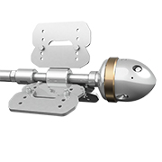
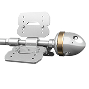

6" Badger
The 6” Badger features adjustable speed control which allows operators to meet the demands of the task at hand – slower speeds for tough deposits and plugs, faster rotation for easier jobs or polishing.
- Only rotary pipe cleaning tool on the market with adjustable speed control for fine-tuning to specific requirements
- Different jetting configurations allow for more or less pull and forward hitting power
- Navigates elbows as small as 6 in. (152 mm)
- Speed controlled rotary tools provide complete internal coverage with optimum jet delivery
- Maximize cleaning by choosing slower speeds for hard to clean or plugged pipes, and faster speeds for polishing easy to clean pipes with a single tool
- Optimize the tool for a variety of pumps pressures and flows with multiple jetting options
- Centralizer options for larger pipe sizes available
| Tool Family | Badger | |
|---|---|---|
| Tool Model | BA-P8 | |
| Pressure Range | 2–15k psi | 140–1000 bar |
| Flow Range | 15–55 gpm | 57–208 l/min |
| Flow Coefficient | 2.3 Cv | |
| Rotation Speed | 50–300 rpm (Adjustable) | |
| Inlet Connection | 1/2 NPT | |
| Port Size | 1/4 NPT (P4) | |
| Nozzle Type | APF4 | |
| Port Plug | GP 025-P4SS | |
| Diameter | 3.8 in. | 96 mm |
| Length | 5.4 in. | 140 mm |
| Weight | 8.0 lb | 3.6 kg |
| Maximum Water Temp. | 160 °F | 70 °C |
| Tool Family | Badger | |
|---|---|---|
| Tool Model | BA-MP9, BA-M24 | |
| Pressure Range | 12–22k psi | 840–1500 bar |
| Flow Range | 14–43 gpm | 53–163 l/min |
| Flow Coefficient | 2.3 Cv | |
| Rotation Speed | 50–300 rpm (Adjustable) | |
| Inlet Connection | 9/16 MP or M24 (based on model) | |
| Port Size | 1/4 NPT (P4) | |
| Nozzle Type | APF4 | |
| Port Plug | GP 025-P4SS | |
| Diameter | 3.8 in. | 96 mm |
| Length | 5.4 in. | 140 mm |
| Weight | 8.0 lb | 3.6 kg |
| Maximum Water Temp. | 160 °F | 70 °C |

6" Badger Overview Video

6" Badger Tool Maintenance
Our expert staff is available Monday through Friday 8AM - 5PM MST to answer questions and offer advice on your toughest cleaning applications.